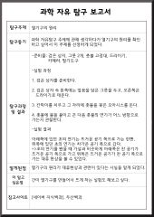

탐구 보고서


밑에 이미지를 클릭하면 저장할 수 있어요!

별에 관한 것
-탐구동기
까만 밤하늘을 보니 수 없이 반짝이는 별들이 내 눈 안으로 들어 왔다, 무척이나
예뻤다. 하지만 별에 대해서 하나도 아는 것이 없어서
이번 기회를 통해서 별자리 및 별에 관한 자료를 찾아보면서 지식도 쌓을 겸, 많은 것을 깨닫기로 했다.
탐구 과정 및 결과
1. 계절별 별자리예로부터 사람들은 하늘의 별들은 신화나 전설에 나오는 신, 영웅, 동물. 등의 모양으로가상하여 이름을 붙였는데
이러한 별의 무리를 별자리 또는 성좌라고 합니다 현재까지 발견된 별자리는 88개가 있으며, 계절에 따라 잘 보이는 별자리가
각각 다릅니다.....
화성에서 왜 사람이 살 수 없을까?
-탐구동기
지구가 아닌 화성에서 사람이 살 수 없다는 사실에 대해
알아보고 싶어서 탐구를 하게 되었다.
탐구 과정 및 결과
1. 화성까지 여행하는 18개월동안 인간은
solar energetic particles(SEPs)와 galactic cosmic rays(GCRs)
두가지 방사능에 노출. 핵발전소 노동자의 15배를 쏘이게 된다.
2. 지구 평균 온도는 14도, 화성은 -63도
.....
구름 만들기
-탐구동기
구름이 만들어지는 원리가 궁금하여 실험을 하게 되었다.
탐구 과정 및 결과
1. 둥근 플라스크 안에 물을 조금 넣고 온도계와 주사기를 장치한다.
2.주사기의 피스톤을 갑자기 뒤로 잡아당겨 플라스크 안의 공기를 팽창시키면서 내부상태와 온도의 변화를 관찰한다.
3.주사기의 피스톤을 갑자기 밀어 플라스크 안의 공기를 압축 시키면서 내부상태와 온도의 변화를 관찰한다.
4.플라스크 안에 향 연기를 조금 넣은 후 위의 과정을 반복하여 변화를 관찰함......

-탐구동기